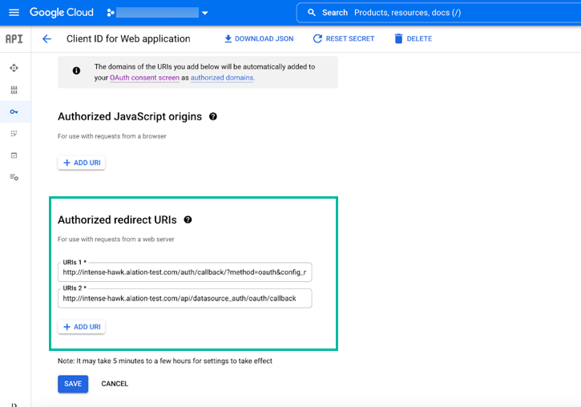
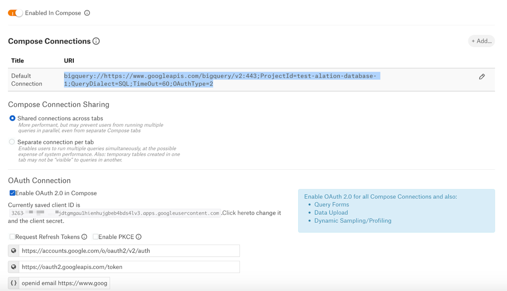

OCF Connector for Google BigQuery: Install and Configure¶
Alation Cloud Service Applies to Alation Cloud Service instances of Alation
Customer Managed Applies to customer-managed instances of Alation
Prerequisites¶
BigQuery API¶
BigQuery API must be enabled for the projects you want to catalog in Alation.
Note
You can check if the BigQuery API is enabled for your projects under APIs & Services > Enabled APIs & services on Google Cloud Platform. If disabled, enable it by clicking ENABLE APIS AND SERVICES and selecting the BigQuery API.
Network Connectivity¶
Open outbound TCP port 443 to the Google BigQuery server.
Authentication¶
For Google BigQuery data sources, Alation supports authentication with a service account and with a user account and OAuth client.
Authentication with a service account supports metadata extraction, sampling and profiling, and query log ingestion (QLI). However, it will not allow you to use the functionality where specific users initiate connections to the database (Compose, query forms, dynamic sampling and profiling, and data upload). These features require a user account and will need to be configured additionally.
Authentication with a user account and an OAuth client supports all extraction features (metadata extraction, sampling and profiling, QLI), as well as Compose, query forms, dynamic sampling and profiling, and data upload.
Required Permissions¶
The service or user account you want to use for extraction requires a specific set of permissions on Google BigQuery.
Note
Storage buckets must have the Storage Object Viewer permission to extract external tables.
If the project has the Google Storage API enabled, add more permissions (see below).
When you create an account for Alation, assign it two roles:
The role
AlationUser—a custom role with the permissions listed below. We recommend creating this role prior to creating an account.The predefined role of
bigQuery.jobUserthat provides permissions to run jobs, including queries, in a project.
Note
If the account you are authenticating with has the Owner role on the project, Alation will be able to fetch metadata without being assigned the roles of bigQuery.jobUser and AlationUser. The roles bigQuery.jobUser and AlationUser are required for accounts which do not have the Owner role.
AlationUser¶
Role |
Permissions |
Resource Level |
|---|---|---|
AlationUser (custom role) |
To extract external tables:
For projects with Google Storage API enabled:
|
Project |
BigQuery Job User¶
Role |
Permissions |
Resource Level |
|---|---|---|
roles/bigquery.jobUser |
|
Project |
Permissions by Function¶
Functionality |
Required Permissions |
|---|---|
MDE |
|
Sampling and profiling |
|
QLI |
|
Authenticate with Service Account¶
Google service accounts are special accounts that belong to your applications or virtual machines instead of individual end-users. An application uses a service account to call the Google API of a service without users being directly involved in this flow.
Alation supports service accounts of the following types:
SERVICE_ACCOUNT_NAME@PROJECT_ID.iam.gserviceaccount.com
PROJECT_NUMBER-compute@developer.gserviceaccount.com (Compute Engine API service account)
Create a Service Account and Generate Key¶
Each service account is associated with a key managed by the Google Cloud Platform (GCP) and used for service-to-service authentication in GCP.
You can either create a new service account for Alation, use an already existing service account, or use the default Compute Engine service account. If you chose to use an existing service account or the Compute Engine service account, make sure you have the account key and key file or generate new ones to use in Alation.
To create a service account:
Log in to Google Cloud Platform and go to IAM & Admin > Service Accounts.
Click +CREATE SERVICE ACCOUNT.
Enter the required and optional information (name, ID, description) and click Create.
Assign the roles
bigquery.jobUserandAlationUserto the service account. Click Done.In the list of service accounts, for the service account you created, click Actions > Manage keys.
Click ADD KEY > Create new key. Choose JSON as Key type (recommended).
Click Create to generate the key. The key file will be saved to your computer.
Save the name of the key and the information about the location of the key file. They will be required later during the configuration on the Alation side.
Extracting from Multiple Projects¶
When authenticating with a service account, you can extract metadata from multiple projects. To extract from multiple projects, cross-reference projects by adding the service account as a member on all the projects you want to extract. Assign it the required permissions on all these projects.
The connection URI in Alation only needs to include the project ID of the main project (the project on which this service account was created) as the value of the Database Name parameter. Alation will fetch all schemas from all projects the service account has access to.
Adding Configuration for Compose, Query Forms, Dynamic Sampling and Profiling, and Data Upload¶
You can additionally configure authentication for Compose, dynamic sampling and profiling, and data upload using a user account and an OAuth client. Use the steps in Authenticate with an OAuth Client to create an OAuth client with the Compose redirect URL only. When setting up your data source in Alation, you will need to specify two sets of parameters: for extraction through the service account and for user-initiated connections (Compose, query forms, dynamic sampling and profiling, and data upload).
Authenticate with an OAuth Client¶
You can use an OAuth client and a user account for authentication in Alation. This type of authentication supports all data source features, such as MDE, sampling and profiling, QLI, Compose, query forms, dynamic sampling and profiling, and data upload.
To authenticate with a a user account and OAuth client:
Create a new or designate an existing user account that Alation can use for metadata extraction, sampling and profiling, and QLI. Ensure that this account has the Required Permissions.
Note
To authenticate in Compose, run query forms, perform dynamic sampling and profiling, and upload data, each user will use their own Google BigQuery account.
Create an OAuth client for Alation.
To create an OAuth client:
Log in to Google Cloud Platform and in the left-hand menu select API & Services > Credentials.
Click on Create Credentials and select OAuth client ID.
Select Web Application in the Application type dropdown list.
Specify a name.
Under the Authorized redirect URIs section, click ADD URI. You will need to add two URIs to cover full data source functionality: one for extraction, sampling, profiling, and QLI; and the second for Compose, query forms, dynamic sampling and profiling, and data upload.
Note
If you chose to authenticate with a service account for extraction, then only add a redirect URI for Compose.
Use the following URI formats:
MDE, sampling and profiling, and QLI
Format:
http://<hostname>/auth/callback/?method=oauth&config_name=<oauth_config_name>—where
<oauth_config_name>is a name of a configuration profile that you will need to create in Alation later. Save the value that you add to the URI to use in Alation, for examplegoogle_oauth_conf.Example:
http://my-datacatalog.com/auth/callback/?method=oauth&config_name=google_oauth_confCompose, query forms, dynamic sampling and profiling, and data upload
Format:
http://<hostname>/api/datasource_auth/oauth/callbackExample:
http://my-datacatalog.com/api/datasource_auth/oauth/callback
Click on Save and copy the client ID and client secret that will be generated. Save them to use later when configuring your data source in Alation.
Installation¶
STEP 1: Install the Connector¶
Alation On-Prem¶
Important
Installation of OCF connectors requires Alation Connector Manager to be installed as a prerequisite.
To install an OCF connector:
If this has not been done on your instance, install the Alation Connector Manager: Install Alation Connector Manager.
Ensure that the OCF connector Zip file that you received from Alation is available on your local machine.
Install the connector on the Connectors Dashboard page using the steps in Manage Connectors.
Alation Cloud Service¶
Note
On Alation Service Cloud instances, Alation Connector Manager is available by default.
Ensure that the OCF connector Zip file that you received from Alation is available on your local machine.
Install the connector on the Connectors Dashboard page using the steps in Manage Connectors.
STEP 2: Create and Configure a New Data Source¶
In Alation, add a new data source:
Log in to Alation as a Server Admin.
Expand the Apps menu on the right of the main toolbar and select Sources.
On the Sources page, click +Add on the top right of the page and in the list that opens, click Data Source. This will open the Add a Data Source wizard.
On the first screen of the wizard, specify a name for your data source, assign additional Data Source Admins, if necessary, and click the Continue Setup button on the bottom. The Add a Data Source screen will open.
On the Add a Data Source screen, the only field you should populate is Database Type. From the Database Type dropdown, select the connector name. After that you will be navigated to the Settings page of your new data source.
Note
Agent-based connectors will have the Agent name appended to the connector name.
The name of this connector is Google BigQuery OCF connector.
Enable Complex Data Type UI Support¶
To enable the representation of the struct and array data types in the tree format in the user interface, on the Alation server, set the alation_conf flag alation.feature_flags.enable_generic_nosql_support to True.
On how to use alation_conf, see Using alation_conf.
Create an OAuth Configuration for Extraction¶
Authentication with an OAuth client and a user account for extraction requires creating an OAuth configuration object for Alation AuthService. To create the configuration object, use the steps in Authentication Configuration Methods for External Systems and the following information:
Config Name—Use the same value as in the Authorized redirect URI in the OAuth client settings. See Authenticate with an OAuth Client.
Client Id—Use the client ID of your OAuth client.
Client Secret—Use the client secret of your OAuth client.
Scope—Use value
https://www.googleapis.com/auth/bigquery.Subject (Optional)—Leave blank.
Token Buffer time—Set in minutes, for example:
10.Grant Type—Leave the default value. This parameter does not apply to this connector and will not be used.
PKCE Verifier—Leave the default value. This parameter does not apply to this connector and will not be used.
Authorize Endpoint URL—Use value
https://accounts.google.com/o/oauth2/v2/auth?access_type=offlineRedirect URL—Use format
https://<your_Alation_host>/auth/callback/?method=oauth&config_name=<config_name>Token Endpoint URL—Use value
https://oauth2.googleapis.com/tokenUser Info Endpoint URL—Use format
https://<your_Alation_host>/auth/callback/?method=oauth&config_name=<config_name>
After creating the authentication object, configure the settings of your data source.
Note
Authentication with an OAuth client and a user account for Compose and other features that require user-initiated connections does not require an OAuth configuration object. It will need to be configured separately on the Compose tab of the data source settings.
Access¶
On the Access tab, set the data source visibility using these options:
Public Data Source—The data source will be visible to all users of the catalog.
Private Data Source—The data source will be visible to the users allowed access to the data source by Data Source Admins.
You can add new Data Source Admin users in the Data Source Admins section.
General Settings¶
Note
This section describes configuring settings for credentials and connection information stored in the Alation database. If your organization has configured Azure KeyVault or AWS Secrets Manager to hold such information, the user interface for the General Settings page will change to include the following icons to the right of most options:

{kind=link}
{kind=link}
{kind=link}
{kind=link}
{kind=link}
By default, the database icon is selected, as shown. In the vault case, instead of the actual credential information, you enter the ID of the secret. See Configure Secrets for OCF Connector Settings for details.
Perform the configuration on the General Settings tab.
Application Settings¶
Specify Application Settings if applicable. Click Save to save the changes after providing the information.
Parameter |
Description |
|---|---|
BI Connection Info |
This parameter is used to generate lineage between the current data source and another source in the catalog, for example a BI source that retrieves data from the underlying database. The parameter accepts host and port information of the corresponding BI data source connection. Use the following format: You can provide multiple values as a comma-separated list:
Find more details in BI Connection Info. |
Disable Automatic Lineage Generation |
Select this checkbox to disable automatic lineage generation from QLI, MDE, and Compose queries. By default, automatic lineage generation is enabled. |
Connector Settings¶
Populate the data source connection information and save the values by clicking Save in this section.
JDBC URI¶
Format¶
bigquery://https://www.googleapis.com/bigquery/v2:443;ProjectId=<your_project_ID>;QueryDialect=SQL;
Example¶
bigquery://https://www.googleapis.com/bigquery/v2:443;ProjectId=alation-edw;QueryDialect=SQL;
Note
Legacy SQL is supported: QueryDialect=BIG_QUERY.
Configure Authentication with a Service Account¶
To configure authentication with a service account, specify the following information:
Parameter |
Description |
|---|---|
Service account ID |
Specify the service account ID you have created for authentication and for which you generated the certificate. |
Service Account Certificate |
Upload the certificate using the upload link. Alation accepts the .json and .p12 extension. |
Service Account Certificate’s File Extension |
From this dropdown list, choose the extension of the certificate |
Auth Types |
From this dropdown list, select None as the Auth Type. |
Configuring Authentication with an OAuth Client¶
To configure authentication with a user account, specify the following information:
Parameter |
Description |
|---|---|
Service account ID |
Leave empty. |
Service Account Certificate |
Leave empty. |
Service Account Certificate’s File Extension |
Leave as is. |
Auth Types |
From this dropdown list, select OAuth. The user interface will display the Authentication Profile dropdown list and the Authenticate button. If you have not created any configuration objects yet you will see a warning that none exist. Perform the steps in Create an OAuth Configuration for Extraction to create the required authentication configuration. |
Authentication Profile |
Select the configuration object you created for this
data source (your |
Authenticate |
Click Authenticate. A new tab will open with the Google account selection dialog. Add the user account you want to use for extraction and authorize Alation to access it. |
Test Connection¶
Under Test Connection, click Test to validate network connectivity.
If the test fails, make sure the JDBC URI and Service Account or OAuth client setup are entered correctly.
Logging Configuration¶
Select the logging level for the connector logs and save the values by clicking Save in this section. The available log levels are based on the Log4j framework.
Parameter |
Description |
|---|---|
Log level |
Select the log level to generate logs. The available options are INFO, DEBUG, WARN, TRACE, ERROR, FATAL, ALL. |
Obfuscate Literals¶
Obfuscate Literals—Enable this toggle to hide actual values in the query statements that are ingested during query log ingestion or executed in Compose. This toggle is disabled by default.
Add-On OCF Connector for dbt¶
The dbt connector can be used as an add-on with another OCF connector to extract and catalog descriptions and lineage from dbt models, sources, and columns in dbt Core or dbt Cloud. See Add-On OCF Connector for dbt on how to use this connector.
Metadata Extraction¶
You can configure metadata extraction (MDE) for an OCF data source on the Metadata Extraction tab of the Settings page. Refer to Configure Metadata Extraction for OCF Data Sources for information about the available configuration options.
OCF Google BigQuery data sources support default MDE.
Custom query-based extraction is not supported.
Sampling and Profiling¶
Sampling and profiling is supported. For details, see Configure Sampling and Profiling for OCF Data Sources.
Note
GBQ allows you to create tables using the require_partition_filter feature. This feature will enable you to run simple queries on the table only if you use a filter over the partition column. However, Alation uses simple queries to fetch the sample values of the struct column during table sampling without using a filter, causing the table sampling to fail.
To workaround this issue, change the default query to a custom query during custom table sampling. Custom query allows you to use a filter over the partition column.
Query Log Ingestion¶
No additional configuration is required for query log ingestion. Make sure the account has the required permissions.
Compose¶
To configure authentication for Compose, query forms, dynamic sampling and profiling, and data upload, perform the configuration described below.
This configuration assumes that you have created an OAuth client for Alation and added a redirect URL for Compose as is described in Authenticate with an OAuth Client.
To enable Compose and other features that use user-initiated connections for your data source:
Enable Compose for your data source by enabling the Enabled in Compose toggle.
Select the Enable OAuth 2.0 in Compose checkbox under the section OAuth Connection. The user interface will display the relevant configuration fields.
{kind=link}
Parameter
Description
Client ID
Specify the OAuth client ID.
Client Secret
Specify the OAuth client secret.
Request Refresh Tokens
Select this checkbox to enable requests for refresh tokens. Refresh tokens are issued to the client by the authorization server and are used to obtain a new access token when the current access token expires.
Enable PKCE
PKCE is a way to make a token request more secure. Optional property. Select if available.
Authorization Endpoint
Specify the authorization endpoint to be used to obtain an authorization grant after a user authorizes a client with Google BigQuery.
Use value:
https://accounts.google.com/o/oauth2/v2/authToken Request Endpoint
This endpoint returns access tokens or refresh tokens depending on the request parameters.
Use value:
https://oauth2.googleapis.com/tokenDefault Scope
Use the following values:
openid email https://www.googleapis.com/auth/bigqueryThe values are separated by a space.
Username field/claim
Property of the top-level JSON attribute in the authorization server response to a token request that contains the identity of the authorized user.
Use value
Make sure to select the JWT checkbox after filling this field.
JWT
For most authorization servers, access tokens are issued as a JWT.
When this checkbox is selected, the access token is parsed as a JWT and the username information is extracted as a claim from the token.
When this checkbox is left unselected, Alation attempts to extract the username information as a top-level attribute of the JSON response returned from the authorization server upon token request.
Access token parameter name
Use the value
OAuthAccessToken.OAuth Enablers
Use the value
OAuthType=2.
After providing the OAuth configuration information, either edit the default Compose URI or add a new OAuth-enabled URI using one of the formats below.
bigquery://https://www.googleapis.com/bigquery/v2:443;ProjectId=<Your Project Name>;QueryDialect=SQL;TimeOut=60;OAuthType=2Some GBQ environments require the service account ID in the Compose URL. If that is the case, use this format:
bigquery://https://www.googleapis.com/bigquery/v2:443;ProjectId=<Your Project Name>;QueryDialect=SQL;TimeOut=60;OAuthType=2;OAuthServiceAcctEmail=<Service Account ID>Click Save in this section to save the information you entered.
{kind=link}
For other configuration options on the Compose tab, refer to Configure Compose for OCF Data Sources.
Note
When you create temporary tables (TEMP tables) on GBQ using Compose, ensure that you enclose the query within BEGIN and END statements. For example:
BEGIN CREATE TEMP TABLE _SESSION.V_TEST AS SELECT * from `ostk-gcp-ostkedwviews-prod.edw_access_views.ostk_cal`; END